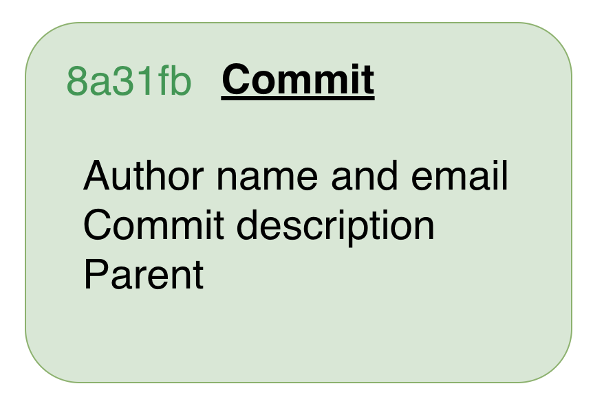
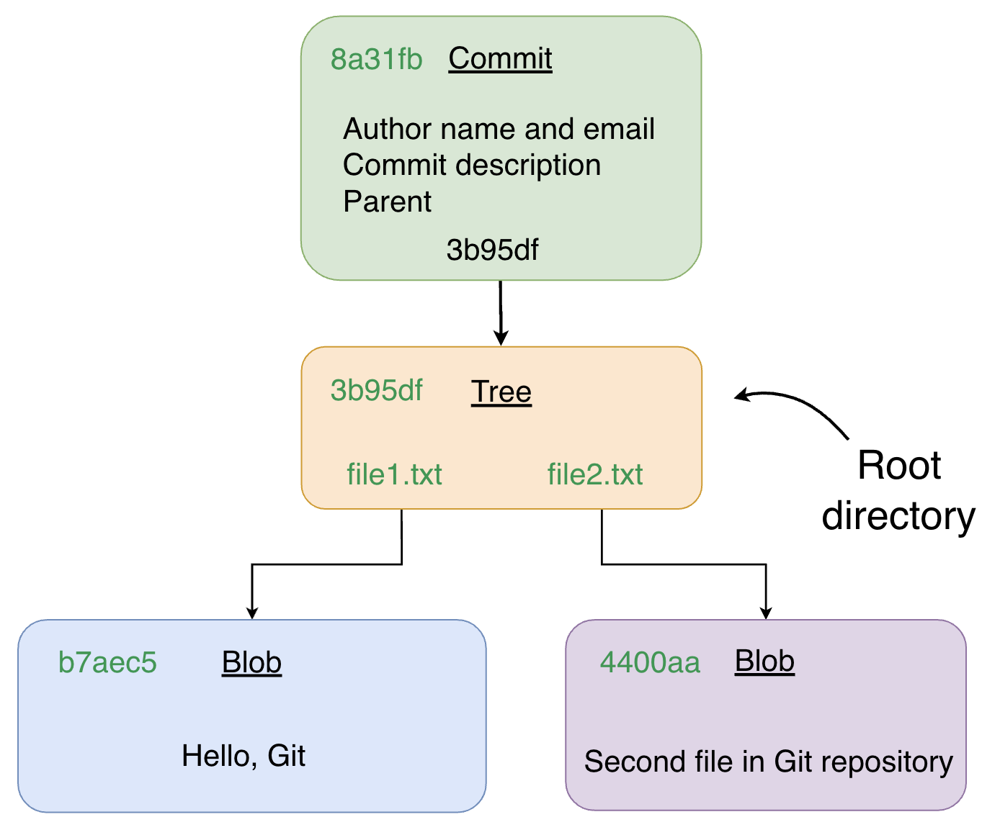
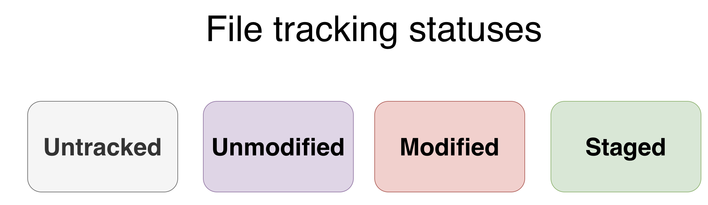
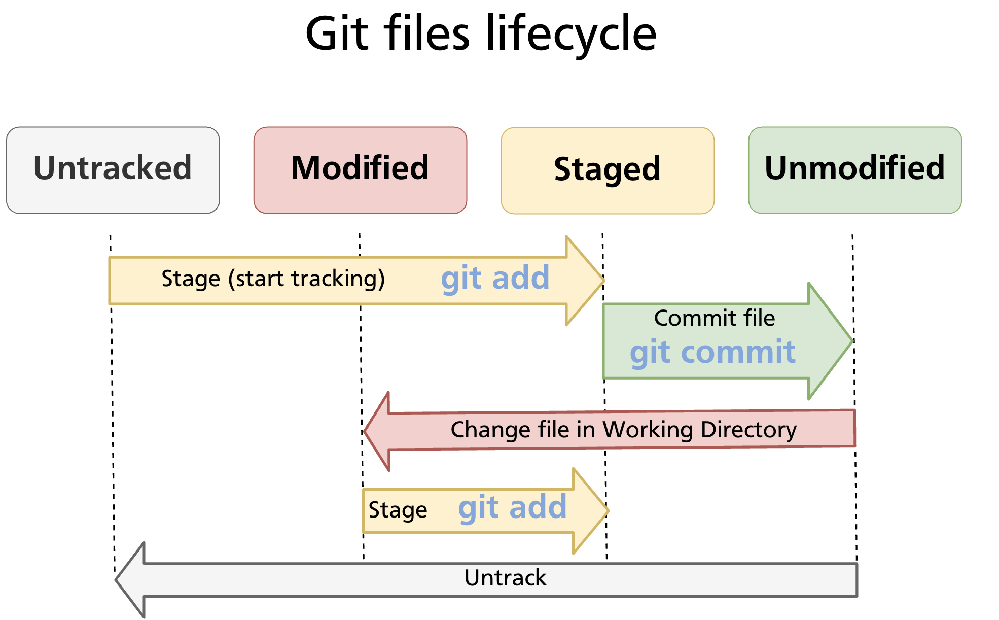
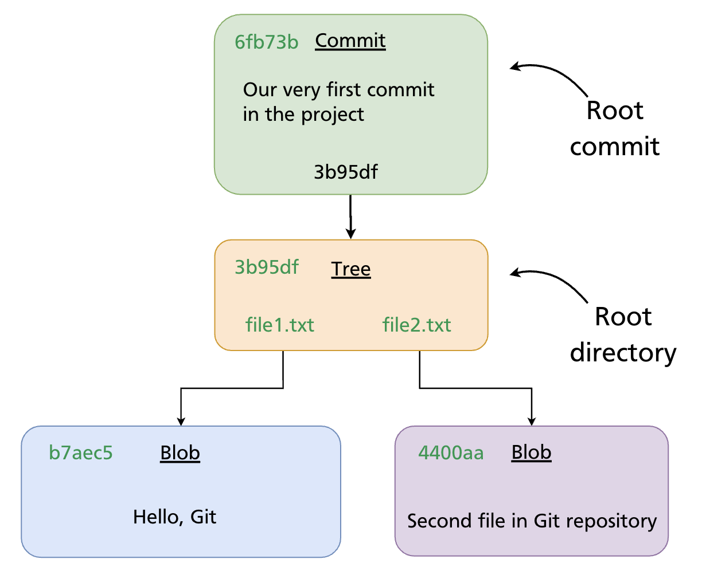
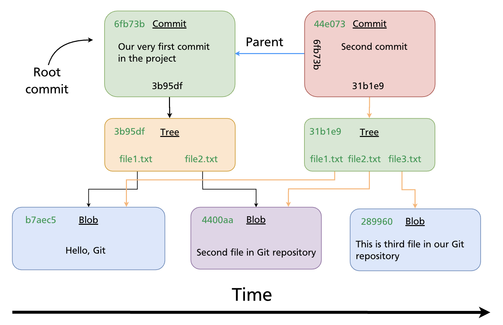

Chapter 05 — Creating a Repository & Basic Operations
Git organises work around repositories and commits. This chapter explains what those are, shows you how to create a repository from scratch or clone an existing one, introduces the five commands you will use on every working day, and walks through making your first two commits step by step.
The Three Areas
Before issuing any commands it helps to have a clear mental model of where your files live at any given moment. Git works with three distinct areas:
- Working directory — the folder on your filesystem where you read and edit files normally. Git watches this area but does not automatically record changes.
- Staging area (also called the index) — a preparation zone where you assemble exactly the changes you want to include in the next commit. Files must be explicitly added here before they can be committed.
- Git repository (the
.gitfolder) — the permanent record store. Every commit you make is written here as a compressed snapshot.
A typical change moves through all three areas: you edit a file in the working directory, stage it with git add, and then permanently record it with git commit.
Creating a Repository
Initialising a New Repository
To turn any folder into a Git repository, run git init inside it:
mkdir my-project
cd my-project
git init
# Initialized empty Git repository in /path/to/my-project/.git/
Git creates a hidden .git/ subdirectory that holds the entire history and configuration for the project. You never need to edit files inside .git/ directly.
# Confirm Git recognises the repository
git status
# On branch main
# No commits yet
# nothing to commit (create/copy files and use "git add" to track)
Note: On older Git installations the default branch may be called
masterrather thanmain. To setmainas the default for all new repositories, run:
Cloning an Existing Repository
If you want a local copy of a repository that already exists — on GitHub or elsewhere — use git clone:
# Clone over HTTPS
git clone https://github.com/user/repo.git
# Clone over SSH (requires SSH key set up — see Chapter 04)
git clone git@github.com:user/repo.git
# Clone into a specific folder name
git clone https://github.com/user/repo.git my-folder
git clone creates a new directory, initialises a .git/ folder inside it, copies the entire history, and checks out the default branch. The remote is automatically registered as origin.
Further reading:
git initdocumentation ·git clonedocumentation
The Commit Object
Every time you run git commit, Git creates a commit object and stores it in the repository. A commit object contains:
- Author — name and email of the person who wrote the change
- Committer — name and email of the person who recorded it (often the same as the author)
- Timestamp — when the commit was made
- Commit message — a description of the change
- Parent — the SHA of the previous commit (empty for the very first, or root, commit)
- Tree pointer — a SHA referencing a tree object that represents the project snapshot

Commit → Tree → Blobs
A tree object is Git's representation of a directory: it lists filenames alongside the SHA of each blob object (file content). This three-level structure means Git stores the full state of every file in the project at the time of the commit.

Because every object is identified by a SHA computed from its content, identical files across different commits share the same blob — Git never stores the same content twice.
Further reading: Git Objects — Pro Git book
Core Commands at a Glance
| Command | What it does |
|---|---|
git status |
Shows the current state of the working directory and staging area |
git add |
Moves changes from the working directory into the staging area |
git commit |
Writes a snapshot of the staging area into the repository |
git log |
Displays the commit history for the current branch |
git checkout |
Switches to a different branch or restores files from a commit |
You will use these five commands in every working session. The sections below show each one in context.
File States & the Lifecycle
Every file in a Git repository is always in one of four states:
| State | Meaning |
|---|---|
| Untracked | Git has never seen this file — it exists in the working directory only |
| Unmodified | The file matches its last committed version |
| Modified | The file has been changed since the last commit, but not yet staged |
| Staged | The change has been added to the staging area and is ready to commit |

State Transitions
Files move between states in response to your commands:
- Untracked → Staged:
git add <file>— starts tracking the file and stages it. - Staged → Unmodified:
git commit— writes the staged snapshot; the working copy now matches the repository. - Unmodified → Modified: edit the file in your editor or terminal — Git detects the change automatically.
- Modified → Staged:
git add <file>again — stages the updated version. - Any state → Untracked:
git rm --cached <file>— removes the file from tracking without deleting it from the working directory.

Tip: Run
git statusat any point to see exactly which files are in which state.
Practical Walkthrough: From Empty Folder to Two Commits
The following example builds on an empty repository and shows the full loop from creating files to viewing history.
Step 1 — Initialise and create the first files
mkdir demo-project && cd demo-project
git init
# Create two files
echo "Hello, Git" > file1.txt
echo "Second file in Git repository" > file2.txt
git status
# Untracked files:
# file1.txt
# file2.txt
Step 2 — Stage and make the root commit
git add file1.txt file2.txt
git status
# Changes to be committed:
# new file: file1.txt
# new file: file2.txt
git commit -m "Our very first commit in the project"
# [main (root-commit) 6fb73b] Our very first commit in the project
# 2 files changed, 2 insertions(+)
After this commit Git has recorded a root commit — the starting point of the history. It contains no parent reference.

Step 3 — Add a third file and make a second commit
echo "This is the third file in our Git repository" > file3.txt
git status
# Untracked files:
# file3.txt
git add file3.txt
git commit -m "Second commit"
# [main 44e073] Second commit
# 1 file changed, 1 insertion(+)
The second commit records file3.txt alongside the unchanged file1.txt and file2.txt. Its parent field points to the root commit SHA.

Step 4 — View the history
git log
# commit 44e073... (HEAD -> main)
# Author: Your Name <you@example.com>
# Date: ...
#
# Second commit
#
# commit 6fb73b...
# Author: Your Name <you@example.com>
# Date: ...
#
# Our very first commit in the project
For a compact view:
Summary
- A Git repository has three areas: the working directory, the staging area, and the repository itself.
git initcreates a new repository;git clonecopies an existing one.- Every commit is an object storing author, message, parent SHA, and a pointer to a tree of file snapshots.
- Files cycle through four states — Untracked, Unmodified, Modified, Staged — driven by
git addandgit commit. - The core daily loop is: edit →
git add→git commit→ repeat.
Further reading: Git Basics — Pro Git book
Previous: Chapter 04 — GitHub Authentication (SSH, PATs, gh CLI) · Next: Chapter 06 — Tracking Files & File States